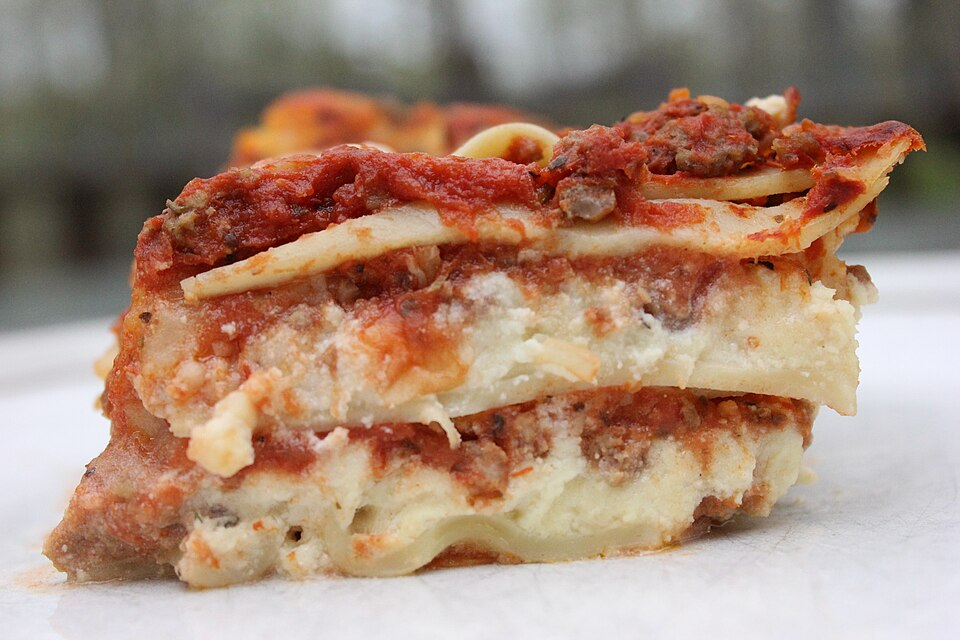

Lasagna
Home

Description
Lasagne is a classic staple of italian food that is surprisingly easy to make, goes surpisngly far in feeding the troops and its simplicity leads to an ease of customisability meaning you can change up the flavours to suit your personal preference
This recipe is really accessable,the basic ingredients are some standard veggies, mince and the ingredients for a cheesy white sauce - all things you might already have on standby in your kitchen already. The most exotic thiing you'll need to get special is just the lasagne sheets.
Ingredients:
Bolognese Sauce
- Onion
- Garlic
- Carrot
- Celery
- Beef
- Red Wine
- beef stock cubes
- Bay Leaves
- Thyme
- Oregano
- Worcestershire Sauce
White Sauce
Extras
Steps:
- Chop your veggies and combine the Bolognese sauce ingredients in one pot
- In another pot make a roux and add milk then cheese to make the white sauce
- In a dish start with a little Bolognese then start layering lasange sheets, bolognese and white sauce
- Make the last layer white sauce and then sprinkle some cheese on top before cooking
- Once cooked let it sit for 10-15 minutes before serving.